Parall
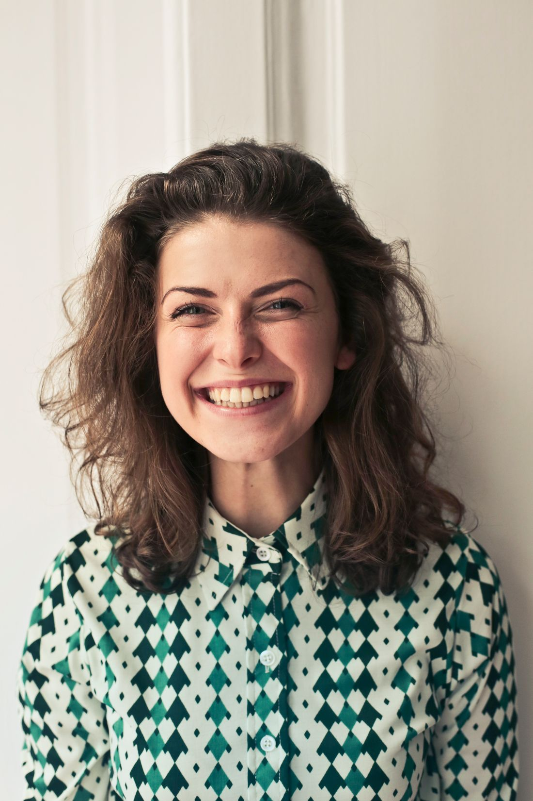
Independent practice
01—06
Index
Portfolio · Vol. 01
Art direction and image making for people, places and the things they leave behind.
Start with the light. Let the subject set the pace.
Parall is an independent art direction practice. I work on portraits, small campaigns and editorial stories. The first pass usually happens on paper: a few references, a sketch of the space and a note about what should stay out of the frame.
- 3ways to work
- 7archive frames
- 6selected studies
- 01independent practice
Six studies in people and place
A mix of portraiture and spatial studies. Each starts with something simple: a wall, a face, the light coming through a window.
-
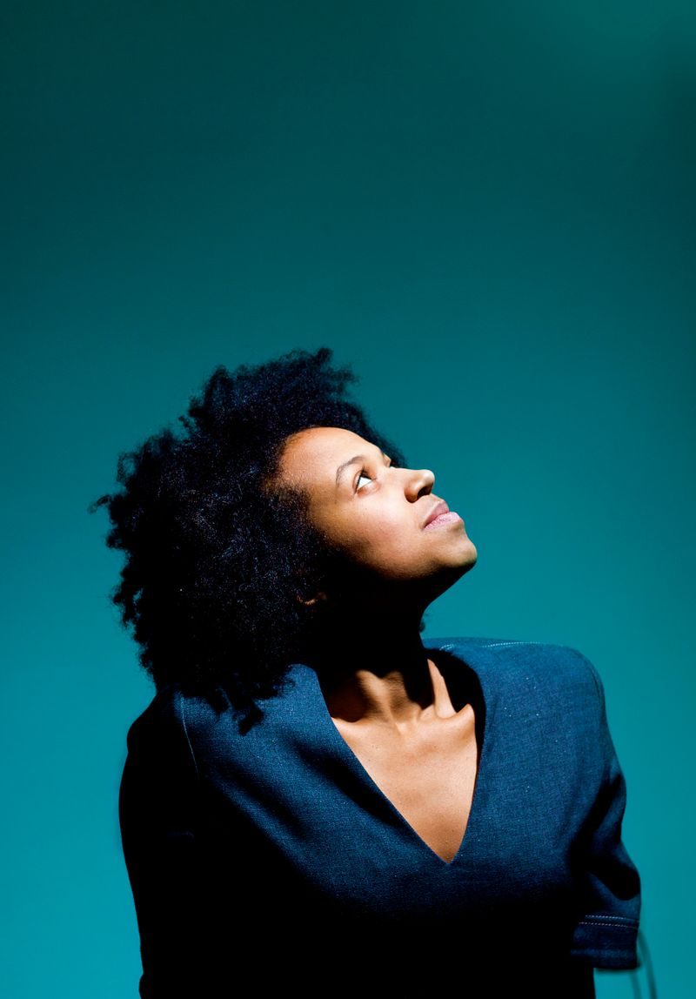
Day Shift01 · Portrait study
-
Still Room02 · Studio portrait
-
Side Street03 · Outdoor portrait
-
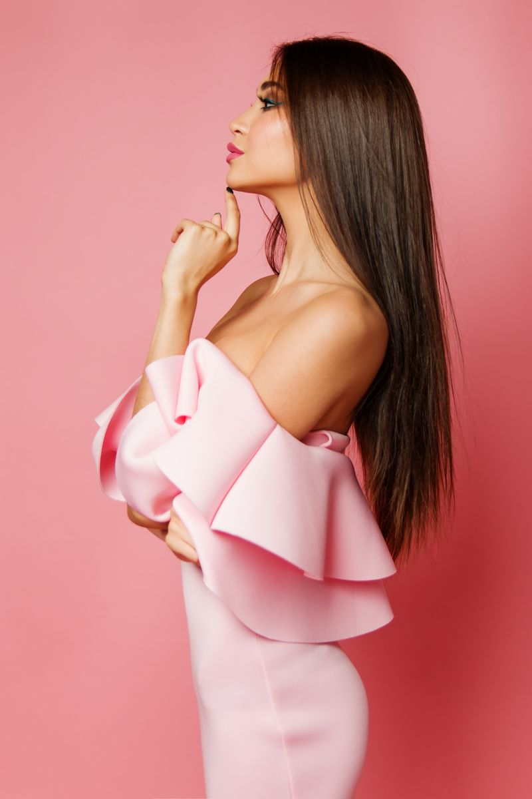
Soft Focus04 · Hair and gesture
-
Crosslight05 · Available light
-
Open Window06 · Colour study
On the worktable
A stack of contact sheets, two marked-up dummy books and a colour test for an image that started out in black and white.
Three stages, from brief to frame
From the first conversation to the final edit, there are three points where we sit down and decide what stays.
-
Stage one · Direction
Research
We agree on what the pictures need to do before deciding how they should look.
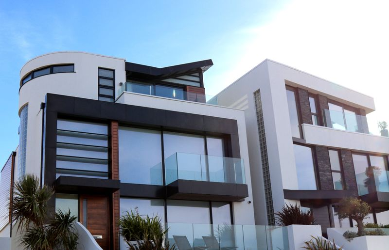
- 01
- Read the brief
- 02
- Gather references
- 03
- Scout the space
- 04
- Test the light
- 05
- Agree on the route
-
Stage two · Production
On set
A small crew, a clear shot list and enough room to follow an unexpected frame.
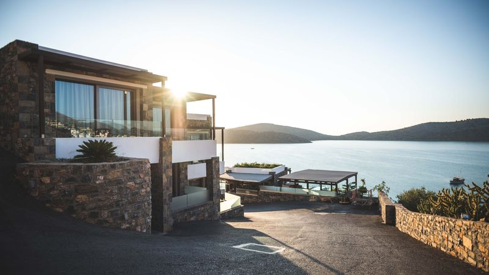
- 01
- Walk through the set
- 02
- Set the first light
- 03
- Shoot the core frames
- 04
- Make room for tests
- 05
- Review contact sheets
-
Stage three · Delivery
Final edit
We make the sequence first, then finish the individual pictures.
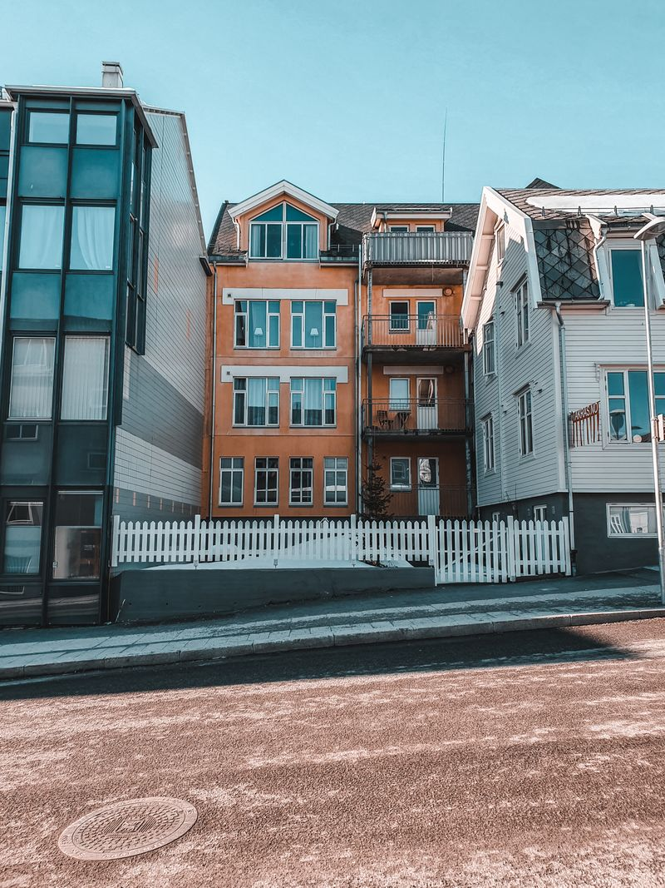
- 01
- Build the shortlist
- 02
- Sequence the edit
- 03
- Finish colour
- 04
- Prepare exports
- 05
- Hand over files
Notes from the contact sheet
Seven studies in scale and space. The moving band shows the source image against its false-colour treatment.
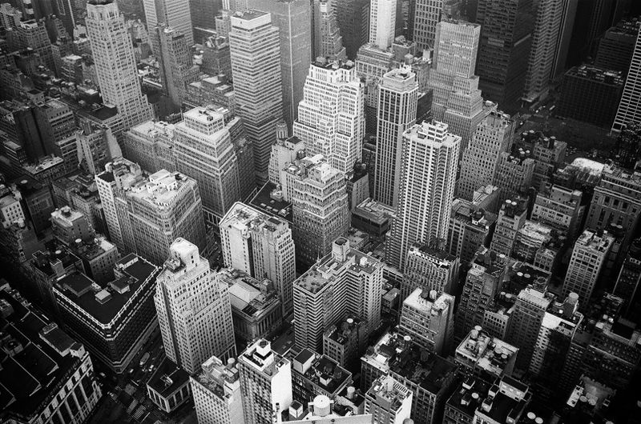
Frame 01 · First light
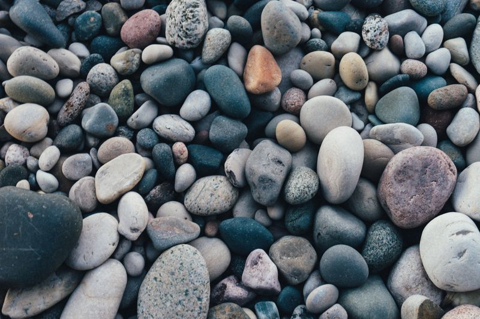
Frame 02 · Surface
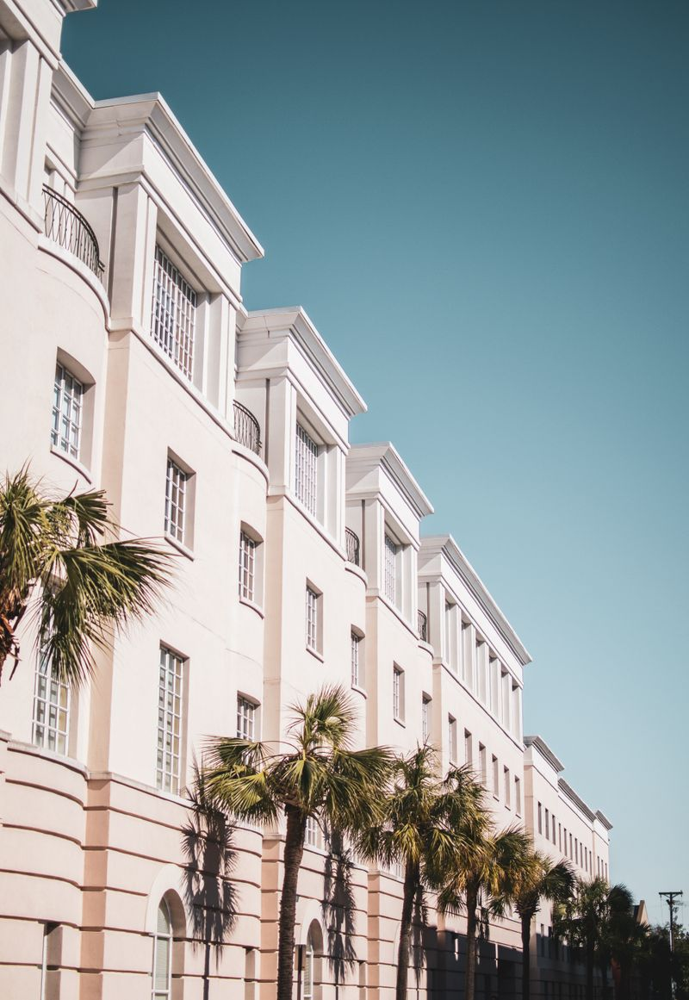
Frame 03 · Long view
Frame 04 · Quiet corner
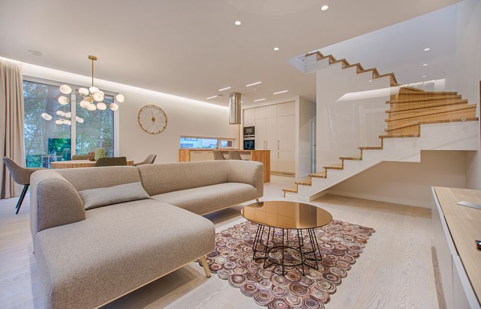
Frame 05 · Geometry
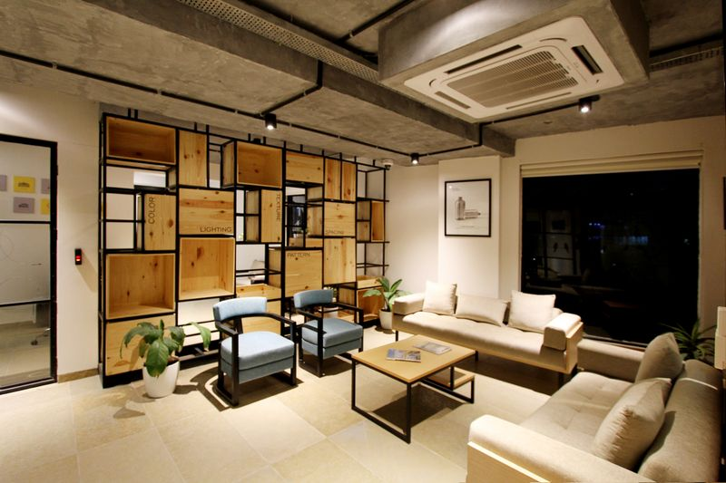
Frame 06 · After hours
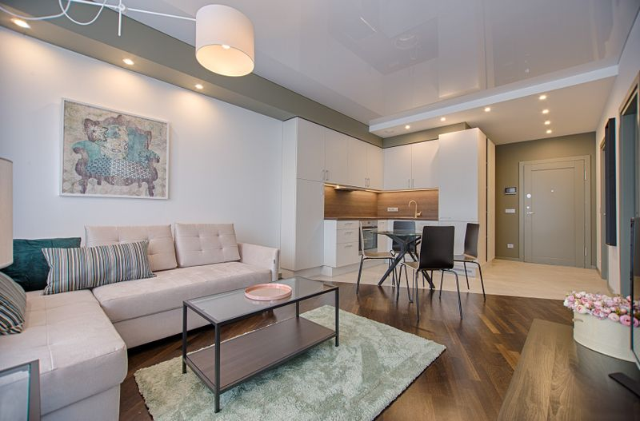
Frame 07 · Last look
“If the picture still works without the colour, the colour is doing the right job.”
ParallStudio notebook · Vol. 01
“I mark the contact sheet before opening the retouching tools. It’s easier to see the whole story that way.”
Note 02 · Editing
“On location I try the plainest version first. Then I know what the extra light is actually adding.”
Note 03 · On location
Find the right scope
Three starting points. The brief determines the crew, schedule and usage, so every project gets its own estimate.
-
Concept and planning
01
Direction
- Brief and concept session
- Visual research and moodboard
- Production-ready treatment
Brief
Enquire -
Production and edit
02
Image making
- Shoot plan and image making
- Contact sheets and selects
- Colour and delivery
Shoot
Enquire -
Full creative direction
03
Full production
- Creative direction through delivery
- Crew and production planning
- Final assets for agreed formats
Campaign
Enquire
If your project spans more than one scope, send a short brief to studio@example.com.
Before we start
If your question isn’t covered here, write to studio@example.com.
What should I send with my enquiry?
A short brief, rough dates, where the work will appear and a budget range are enough to begin.
Can I book direction without a shoot?
Yes. A standalone treatment can go straight to your own production team.
Do you work with in-house teams?
Yes. I can plug into an existing crew or help put a small one together.
How long does a project take?
Allow two to four weeks for a small shoot, depending on crew and location availability.
How does image usage work?
The quote sets out the channels, territory and term. Any extensions can be agreed separately.
Can I request accessible files?
Yes. Let me know if you need alt text, text transcripts or another delivery format.
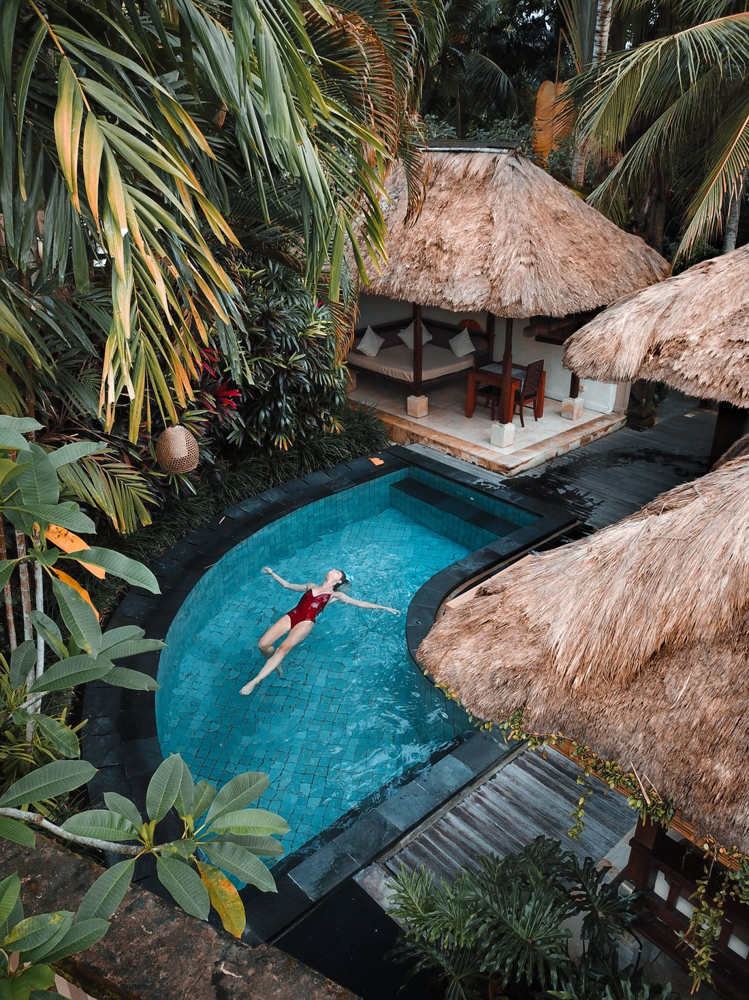
Location study · 019Available light · Working file
Get in touch
Tell me what you’re making, where it needs to live and when it has to be ready. A few lines are enough.
- Brief
- A rough idea is fine. Include links if you have them.
- Timing
- Share your shoot window and final delivery date.
- Location
- Studio, on location or remote direction.
- Usage
- List the formats and channels you have in mind.